Fishing

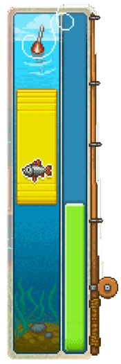
To be able to start fishing, one only needs to obtain a fishing rod, available exclusively from the Lighthouse Keeper. After either bringing him a small collection of moths to obtain the 'starter' rod or purchasing one of the three he sells, simply approach any of the five fishing spots found throughout the world and cast out a line. At first glance, there will be multiple unknown potential targets at each location, each target governed by a percentage chance; there are several variables that determine what chance the player has at catching any particular fish.
Fishing itself is a minigame; after selecting a bait, hold 'E' to commit to a cast and browse each of the three sub-areas unique to each location, releasing 'E' in order to cast the line into a desired sub-area. Occasionally, the fishing float (bobber) will move vertically, signalling a bite and requiring the player to left-click at that precise moment in order to hook a fish. Alternatively, players may instead focus on the Keeper's hand movement, which will show an erratic rhythm after making synced and consistent hand opening and closing motions, at which time players should left click or press "E" in order to hook a fish. Completely missing this time-window will only inflict a  penalty based on cast-cost, while a failed attempt will end the cast and use-up the bait. Once the fish is hooked, the player, by either pressing 'E' or left-clicking, is then required to keep a weighted yellow bar over an animated fish in order to eventually reel it in, the progress of which is indicated by a green bar. The species of fish, the quality of that fish, and the type of fishing rod used by the player will all affect how difficult this process will be.
penalty based on cast-cost, while a failed attempt will end the cast and use-up the bait. Once the fish is hooked, the player, by either pressing 'E' or left-clicking, is then required to keep a weighted yellow bar over an animated fish in order to eventually reel it in, the progress of which is indicated by a green bar. The species of fish, the quality of that fish, and the type of fishing rod used by the player will all affect how difficult this process will be.
As of v1.027, the in-game clock stops while fishing, allowing the player to fish at length during a desired time of day, without having to worry too much about active effects timing out or various daily visits. Interestingly, this does not stop various cooldowns, such as the Teleportstone, or passive movement, such as zombie workers. Note that this includes the donkey who will drop off a corpse earlier than the normal time of sundown, and that corpses still decay while fishing.
Fishing Rods
While any fishing rod is the only requirement to fish, the type of fishing rod chosen will determine several things, including the size of the yellow bar during the minigame; the better the rod, the larger the bar, the easier it is to reel in the fish. It will also impact what species of fish are available, and often influence the odds of catching specific tiers of fish, as well as their inherent quality. For example, lower tiers of fish - such as the Gudgeon and Tilapia - will generally respond well to a lower tier rod, while potentially ignoring the high tier. Vice versa, higher tiers of fish - such as the Salmon and Gold crucian - will prefer, if not require, a high tier rod, while ignoring the low tier. Lastly, there are a few fish - such as the Perch and Bream - that generally have no preference when it comes to rods, in which case other variables, such as the chosen bait and sub-area competition, will have a greater influence.
| Types of Fishing Rods | ||||
|---|---|---|---|---|
| Item | Source | Price | Description | Notes |
| Simple fishing rod |
Lighthouse Keeper | Tool Efficiency: 75% Energy consumption: - |
Ideal for lower-tiered fish - | |
| Good fishing rod |
Lighthouse Keeper | Tool Efficiency: 90% Energy consumption: - |
Able to catch the most fish - | |
| Excellent fishing rod |
Lighthouse Keeper | Tool Efficiency: 100% Energy consumption: 0 |
Ideal for higher-tiered fish - | |
Bait
While a particular fishing rod may provide the potential to catch certain fish, the choice in bait is often the greatest determining factor in regard to the chance in catching a particular fish. Similar to the various types of rods, all fish have certain preferences in regard to bait, and will often ignore an attempt made with an undesirable choice. This can prove challenging, in either finding the particular bait that a certain fish might require, or determining which bait a desired fish prefers over another fish in the same competitive sub-area. Bait can be equipped during the casting screen using the left and right arrows at the bottom.
|
| ||||||||||||||||
|
| ||||||||||||||||
Effects
A simple way to gain a temporary advantage during fishing is by consuming white-fish food, purchased from Horadric or crafted through cooking, the recipe for which can be unlocked after talking with the Lighthouse Keeper. For more information on helpful buffs, see effects.
| Effect | Source | Time | Description | Notes |
|---|---|---|---|---|
Fast reflexes |
Fish nuggets |
2:00 | You have additional time to hook a fish. | While fishing, increases the 'bob' threshold from ~1 second to ~2 seconds. |
Good fisherman |
Fish soup Baked fish |
2:00 | You don't let fish off the hook easily. | While fishing, decreases the rate of descent regarding the green progress bar. |


Fish
There are currently sixteen(16) different species of fish to be found in-game. They each have different preferences when it comes to fishing rods and types of bait, and are only available at certain locations. They can also be roughly categorized into low, mid, and high tiers, based mostly on their preferred rod, difficulty to reel-in, processed materials, and the tier at which they're sold to the Lighthouse Keeper.
| Low-Tier | |||||||||||||
|---|---|---|---|---|---|---|---|---|---|---|---|---|---|
| Fish | Materials | Base sell price | Bait | Rod | Location | Notes | |||||||
| 3:1× Raw sliced meat |
Village / Swamp |
||||||||||||
| 1× White fish fillet |
Village / Waterfall |
Fish-bait | |||||||||||
| 1× White fish fillet |
Sea | Fish-bait | |||||||||||
| 2× White fish fillet |
Village / Swamp |
||||||||||||
| 3× White fish fillet |
Village / Waterfall |
Prefers Daytime | |||||||||||
| 3× White fish fillet 2× Electric powder |
Sea / Swamp |
@Sea; Requires Daytime Ignores Good Rod Decomposes via Alchemy | |||||||||||
| Mid-Tier | |||||||||||||
| Fish | Materials | Bait | Rod | Location | Notes | ||||||||
| 1× Quality fish fillet |
Waterfall / River |
||||||||||||
| 2× Quality fish fillet |
Sea | ||||||||||||
| 2× Quality fish fillet |
Sea | Prefers Daytime Prefers Anchovy over Gudgeon | |||||||||||
| 3× Quality fish fillet |
River | Prefers Daytime Prefers Gem Lure over Steel Lure | |||||||||||
| 3× Quality fish fillet 1× Silver nugget |
Village | Requires Nighttime | |||||||||||
| High-Tier | |||||||||||||
| Fish | Materials | Bait | Rod | Location | Notes | ||||||||
| 1× Blue fish fillet |
Waterfall | ||||||||||||
| 2× Blue fish fillet |
Waterfall / River |
||||||||||||
| 3× Blue fish fillet |
Sea / Waterfall |
Prefers Gem Lure over Steel Lure @Waterfall; Ignores Maggot | |||||||||||
| 4× Blue fish fillet 1× Gold nugget |
River | 16% Day vs 9% Night | |||||||||||
| 4× Blue fish fillet |
Sea | 2% Day vs 5% Night | |||||||||||
Locations
There are a total of five(5) fishing spots found in-game. The following is an extensive breakdown of each location, by species of fish, maximum achievable chance, recommended equipment for that chance, and any relevant notes in regards to each particular fish at each specific location.
Village Pond
In the north-eastern part of the village, there is a small pond with a fishing pier.

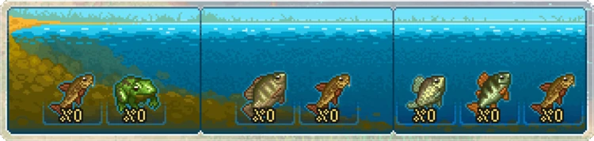
| Available Fish: Frog / Gudgeon(x3) / Tilapia / Perch / Silver crucian Useless Items: N/A Unnecessary Items: Simple fishing rod / Lure with a gem / Anchovy / Gudgeon | |||
|---|---|---|---|
| Fish | Max Chance | Recommended Items | Notes |
| Frog |
100% | 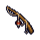 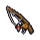 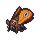 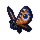 |
No dis/advantage when compared to Swamp location. |
| Gudgeon |
100% | No dis/advantage when compared to Waterfall location. Competition with the Tilapia complicates Mid sub-area. | |
| Tilapia |
100% | 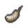 |
Small advantage when compared to Swamp location. Competition with the Gudgeon complicates 'No Bait'. |
| Perch |
100% | 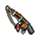 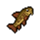 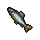 |
Large advantage when compared to Waterfall location. |
| Silver crucian |
100% | 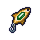 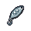 |
No alternate location. Only available during the night. Top 3 most valuable fish. |
| Summary: | Aside from the crucian, all these fish can be caught west of the river, assuming one has repaired the stone bridge. Thus, unless it's convenient, or farming a specific fish like the silver crucian, this location doesn't stay relevant for long, though does remain pleasantly straight-forward and uncomplicated. | ||

Sea
The sea requires you to travel east all the way through the village to the beach, north of the lighthouse.

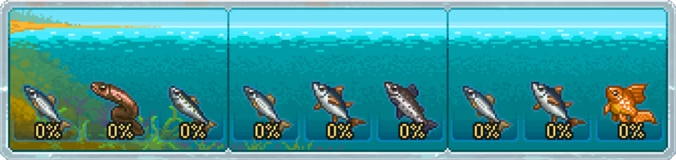
| Available Fish: Anchovy(x3) / Eel / Sardine / Tuna(x2) / Salmon / Goldfish Useless Items: Moth / Butterfly Unnecessary Items: Steel lure / Anchovy / Gudgeon | |||
|---|---|---|---|
| Fish | Max Chance | Recommended Items | Notes |
| Anchovy |
100% | No alternate location. Competition with other fish complicates higher-tier rods. | |
| Eel |
100% | Large disadvantage when compared to Swamp location. Only available during the day. | |
| Sardine |
100% | No alternate location. Competition with the Anchovy complicates 'No Bait'. Competition with the Eel may complicate Maggot bait. | |
| Tuna |
100% | Pro-Tip; see Goldfish below. No alternate location. Competition with the Anchovy complicates 'No Bait'. Prefers the daytime, when competing (<100%). Prefers Anchovy bait, over Gudgeon. | |
| Salmon |
100% | Pro-Tip; Guaranteed Guarantee Gold Star (on catch) with Anchovy bait. | |
| Goldfish |
5% | No alternate location. Prefers the nighttime; 2% chance otherwise. When farming, 95% chance of Tuna. Top 3 most valuable fish. | |
| Summary: | One of the more complex locations, with a lot of competition, and of the six available fish, four are unique and one is quite rare. Also includes some odd percentages, a few relating to changes in day/night. | ||
Waterfall
The waterfall can be found by traveling directly north after crossing the stone bridge west of the graveyard.

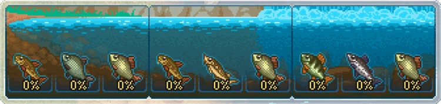
| Available Fish: Gudgeon(x2) / Bream / Perch / Carp(x3) / Sturgeon / Salmon Useless Items: N/A Unnecessary Items: Simple fishing rod | |||
|---|---|---|---|
| Fish | Max Chance | Recommended Items | Notes |
| Gudgeon |
100% | No dis/advantage when compared to Village Pond location. Competition with the Bream complicates Near sub-area. | |
| Bream |
100% | Small disadvantage when compared to River location. Competition with the Gudgeon complicates 'No Bait'. Competition with the Carp complicates Excellent Rod. | |
| Perch |
100% | Small disadvantage when compared to Village Pond location. Competition with the Carp complicates Excellent Rod. Prefers daytime, when competing (<100% chance). | |
| Carp |
100% | No alternate location. Competition with other fish complicates Steel Lure. | |
| Sturgeon |
100% | Small advantage when compared to River location. Competition with the Carp may complicate some bait. | |
| Salmon |
100% | Pro-Tip; Guaranteed Arguable dis/advantage when compared to Sea location. Competition with Perch complicates fish-bait. Competition with other fish complicates Excellent Rod. | |
| Summary: | A highly competitive location, that is thankfully balanced out by strong preferences, such as the Carp's requirement for - and the Gudgeon's hatred of - the excellent fishing rod. There is some interesting variance in competition, due to variables such as day/night, though they don't factor into the fish already at 100% chance. | ||
Swamp
The swamp is found across the stone bridge to west of the graveyard. The fishing spot is south-west of the witch's hut.

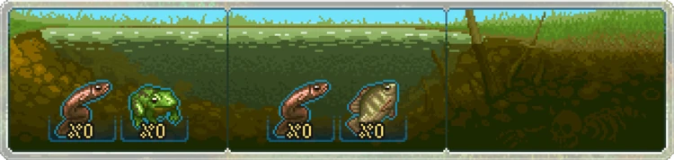
| Available Fish: Frog / Tilapia / Eel(x2} Useless Items: Lure with a gem / Steel lure / Anchovy / Gudgeon Unnecessary Items: Simple fishing rod | |||
|---|---|---|---|
| Fish | Max Chance | Recommended Items | Notes |
| Frog |
100% | No dis/advantage when compared to Village Pond location. | |
| Tilapia |
100% | Small disadvantage when compared to Village Pond location. Competition with the Eel complicates 'No Bait' and Maggot. | |
| Eel |
100% | Large advantage when compared to Sea location. Competition with the Tilapia may complicate Mid sub-area. | |
| Summary: | A very straight-forward location, perfect for those starting out, as these are all low tier-fish without much competition. The only downside is the limited selection and usefulness of the fish and its remote location. | ||
River
After removing mountain-pass blockages, either north-west of your home or by following the path west on the other side of the river, one can access this spot by following the river north through the forest.

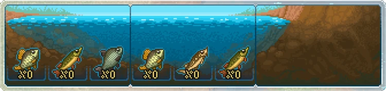
| Available Fish: Bream / Pike(x2) / Sturgeon / Gold crucian(x2) Useless Items: N/A Unnecessary Items: Simple fishing rod / Lure with a gem / Steel lure | |||
|---|---|---|---|
| Fish | Max Chance | Recommended Items | Notes |
| Bream |
100% | Small advantage when compared to Waterfall location. Competition with the Pike complicates other bait. | |
| Pike |
100% | Pro-Tip; see Gold Crucian below. No alternate location. Competition with other fish complicates most bait. Prefers the daytime, except when competing with Gold Crucian. Prefers Gem Lure, over Steel Lure. | |
| Sturgeon |
100% | Small disadvantage when compared to Waterfall location. Competition with other fish complicates most bait. | |
| Gold crucian |
16% | No alternate location. Prefers the daytime; 1-9% chance otherwise. When farming, 84% chance of Pike. Top 3 most valuable fish. | |
| Summary: | Despite a relatively simple appearance, this location can be particularly volatile regarding competition, especially due to changes in day/night, impacting most of the fish - in particular the prized gold crucian. However, despite containing a mere four fish, 2 are unique and one is rare, making this location a high-priority among most fishing enthusiasts. | ||
| |||||||||||